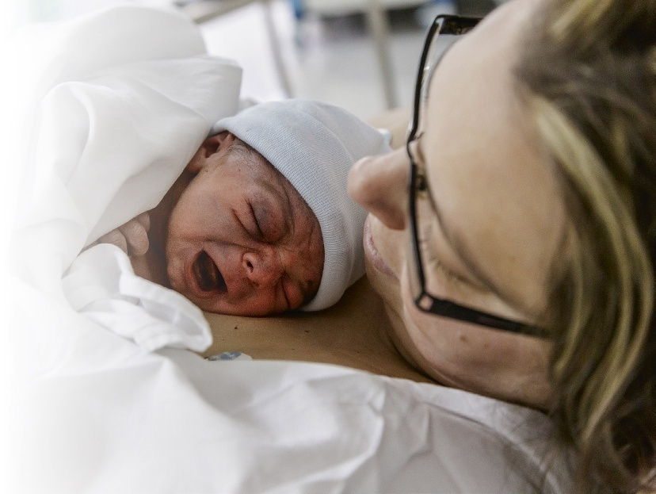
After reading this chapter, the learner should be able to do the following: / 学习完本章后，学员应当能够达成以下临床能力：
http://evolve.elsevier.com/Canada/Sorrentino/SupportWorker
| Term / 术语音标 | English Definition | 中文专业释义 |
|---|---|---|
Caesarean section/sɪˈzeə.ri.ən ˈsek.ʃən/
p.980
|
A surgical incision into the abdominal and uterine walls; the baby is delivered through the incision. | 剖宫产术：经腹壁及子宫壁切口切开取出胎儿的外科手术（又称剖腹产）。 |
cervical mucus/ˈsɜː.vɪ.kəl ˈmjuː.kəs/
p.979
|
A viscous discharge secreted by the glands in the cervix. | 宫颈黏液：子宫颈腺体分泌的黏稠分泌物，具有屏障防御与排卵期黏度变化特征。 |
circumcision/ˌsɜː.kəmˈsɪʒ.ən/
p.996
|
The surgical removal of foreskin from the penis. | 包皮环切术：通过外科手术环形切除阴茎覆盖龟头的过长包皮。 |
congenital/kənˈdʒen.ɪ.təl/
p.986
|
Present at birth. | 先天的：胎儿在母体内发育形成，出生时即存在的（结构畸形或遗传代谢病变）。 |
cradle cap/ˈkreɪ.dəl kæp/
p.985
|
A skin condition in which yellowish, scaly, or crusty patches, made up largely of oil and dead skin cells, appear on the scalp (seborrheic dermatitis). | 乳痂（婴儿脂溢性皮炎）：婴儿头皮上由油脂和脱落角质死皮细胞积聚形成的黄色油腻性鳞屑或结痂斑块。 |
engorged breasts/ɪnˈɡɔːdʒd brests/
p.980
|
Breasts that are overfilled with milk, which makes them swollen, hard, and painful. | 乳房过度充盈（乳胀）：乳房内乳汁积聚过多，导致乳腺组织高度肿胀、质地坚硬伴明显触痛的状态。 |
episiotomy/ɪˌpɪz.iˈɒt.ə.mi/
p.979
|
An incision made in the perineum to increase the size of the vaginal opening for delivery of the baby. | 会阴切开术：分娩时在会阴部所做的外科切口，用以扩大阴道外口以利胎儿娩出并防严重撕裂。 |
jaundice/ˈdʒɔːn.dɪs/
p.987
|
A yellowing of the skin and the white part (sclera) of the eyes. | 黄疸：因血液中胆红素浓度升高，导致皮肤、黏膜及眼巩膜发黄的病理体征。 |
lactation/lækˈteɪ.ʃən/
p.980
|
The process of producing and secreting milk from the breast. | 泌乳：乳腺合成、分泌并排出乳汁的生理过程。 |
leukocytes/ˈluː.kə.saɪts/
p.979
|
White blood cells that are part of the blood; the cells are part of the immune system that fight infection. | 白细胞：血液中的免疫细胞，负责吞噬病原体、抵抗并清除感染。 |
lochia/ˈloʊ.ki.ə/
p.978
|
Postpartum vaginal discharge that begins as a bloody discharge and then changes in colour and decreases in amount after 4 to 6 weeks. | 恶露：产后经阴道排出的子宫分泌物，初起为血性，随后颜色渐淡、量逐渐减少，通常持续 4 至 6 周。 |
mastitis/mæsˈtaɪ.tɪs/
p.981
|
An infection (itis) of the breast (mast). | 乳腺炎：乳腺组织受到细菌侵入或乳汁淤积引起的感染性炎症反应（mast-乳房，-itis炎症）。 |
postpartum/ˌpoʊstˈpɑːr.təm/
p.978
|
After (post) childbirth (partum). | 产后的 / 产褥期：指分娩结束后（通常历时 6 周）母体生理与生殖系统恢复至孕前状态的时期。 |
postpartum blues/ˌpoʊstˈpɑːr.təm bluːz/
p.981
|
Feelings of sadness or mild depression in the birth parent during the first 2 weeks after childbirth; also called baby blues. | 产后情绪低落（Baby Blues）：产妇在分娩后前两周内出现的短暂悲伤、易哭泣或轻微抑郁情绪状态。 |
postpartum depression/ˌpoʊstˈpɑːr.təm dɪˈpreʃ.ən/
p.981
|
Major depression in the birth parent at any point during the first year after childbirth. | 产后抑郁症：产妇在分娩后一年内任何时期发生的严重、持久且损害生活功能的重度抑郁障碍。 |
postpartum psychosis/ˌpoʊstˈpɑːr.təm saɪˈkoʊ.sɪs/
p.981
|
The most severe form of postpartum depression; the birth parent may experience delusions, hallucinations, and suicidal thoughts. | 产后精神病：产后精神障碍中最危重的形式，产妇常伴有严重妄想、幻觉及自杀或伤害婴儿的极高危念头。 |
sudden infant death syndrome (SIDS)/ˈsʌd.ən ˈɪn.fənt deθ ˈsɪn.droʊm/
p.984
|
The sudden, unexplained death of an apparently healthy infant under 1 year of age. | 婴儿猝死综合征（SIDS）：一岁以内外表看似完全健康的婴儿在睡眠中突然发生、经尸检亦无法查明明确原因的死亡。 |
thrush/θrʌʃ/
p.985
|
A common yeast infection that resembles cottage cheese or milk curds and is found on the sides, roof, and sometimes the tongue of a baby’s mouth. | 鹅口疮：由白色念珠菌（真菌）引起的常见婴儿口腔黏膜感染，表现为两颊黏膜、上颚或舌面上附着类似凝乳酪样的白色斑膜。 |
toxic shock syndrome (TSS)/ˈtɒk.sɪk ʃɒk ˈsɪn.droʊm/
p.979
|
A rare, often life-threatening illness that develops suddenly after an infection. | 中毒性休克综合征（TSS）：由细菌毒素引起的一种罕见但突发、进展迅猛且危及生命的全身性感染中毒中毒综合征。 |
umbilical cord/ʌmˈbɪl.ɪ.kəl kɔːrd/
p.995
|
The structure that carries blood, oxygen, and nutrients from the birth parent to the fetus. | 脐带：连接胎盘与胎儿脐部的解剖导管，负责将母体的富氧血液与养分输送给胎儿并排出代谢废物。 |
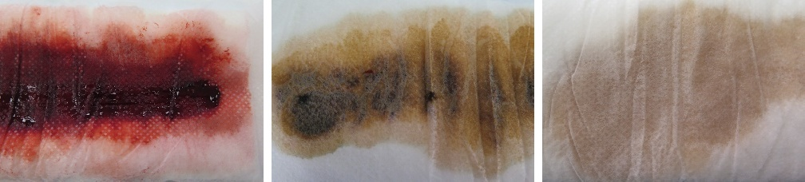
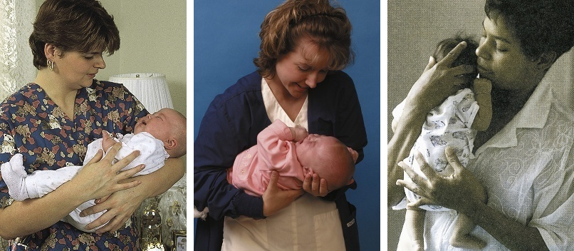
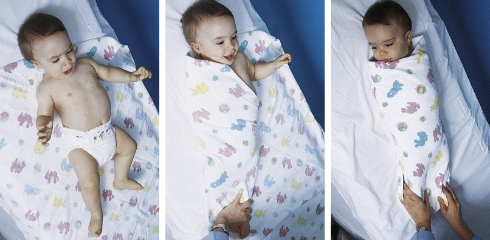
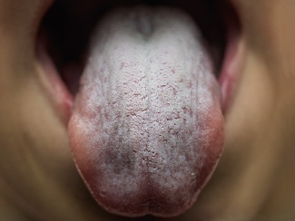
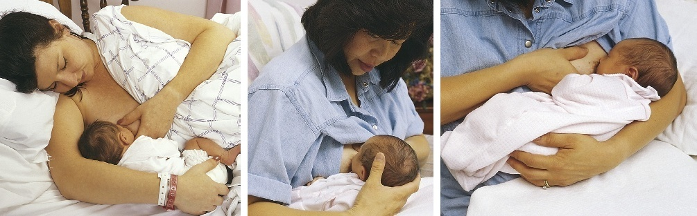
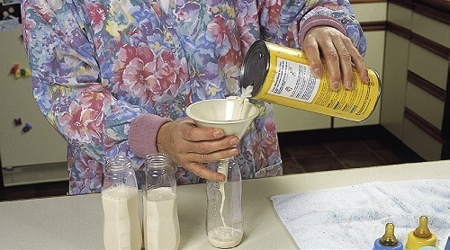
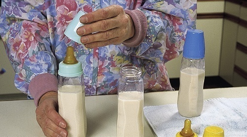
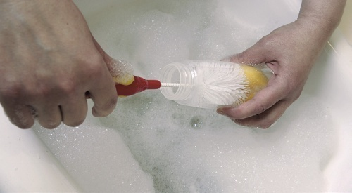
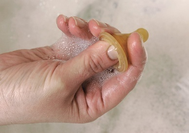
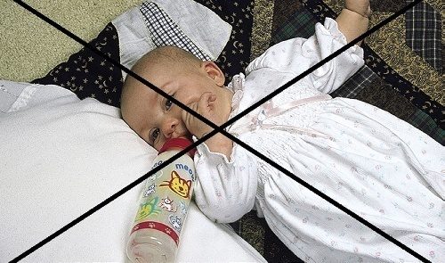
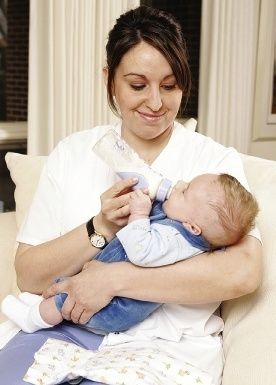
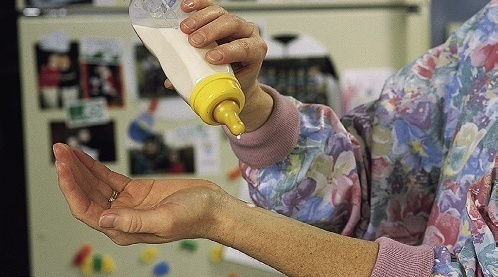
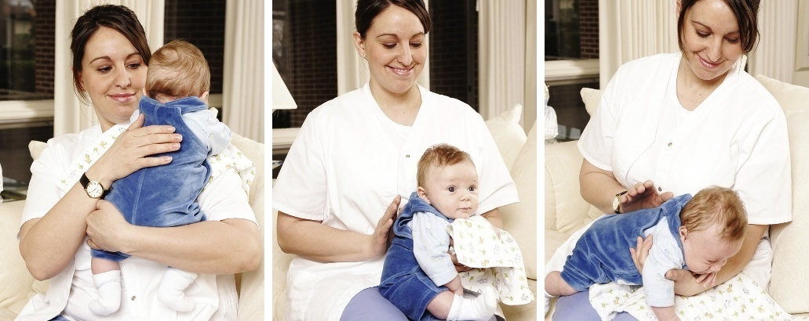
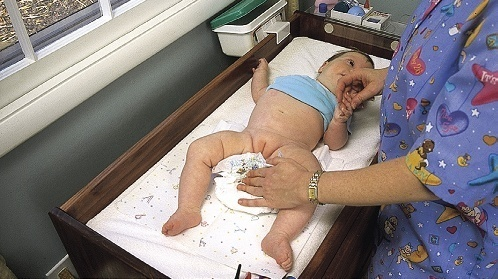
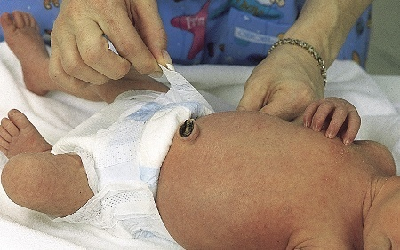
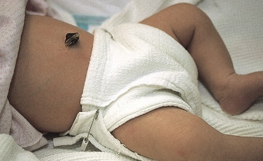
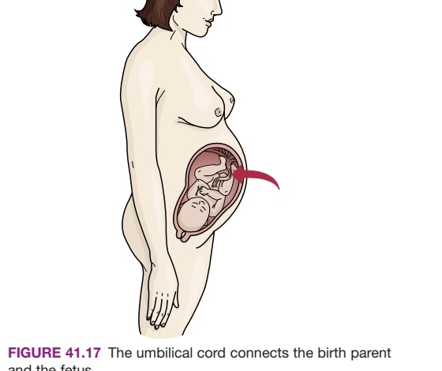
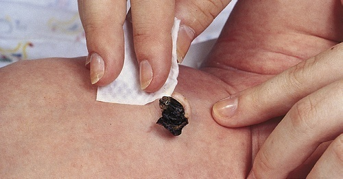
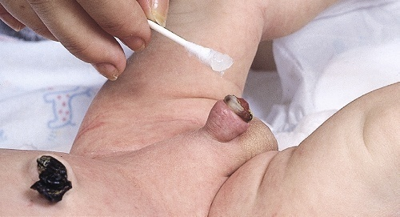
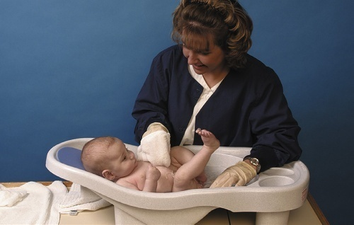
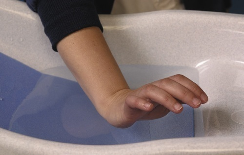
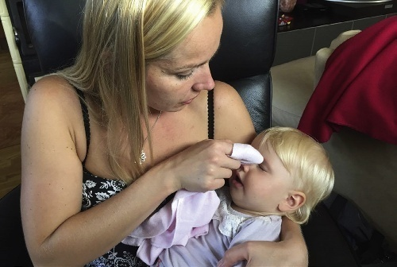
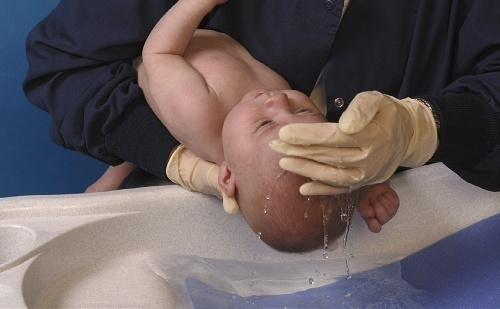
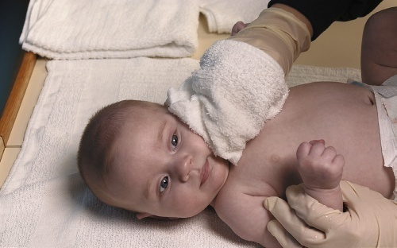
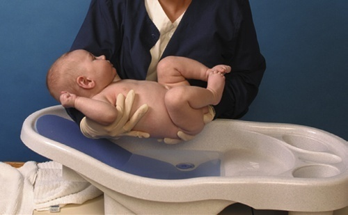
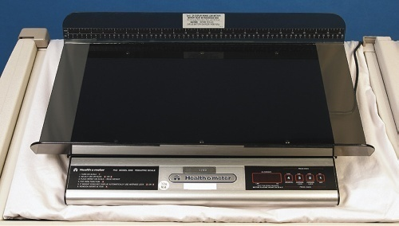
Circle the BEST answer. Answers and complete rationales are available in the dedicated practice sheet.
Answers: 1.A, 2.C, 3.D, 4.A, 5.A, 6.A, 7.D, 8.A, 9.D, 10.B, 11.C, 12.B